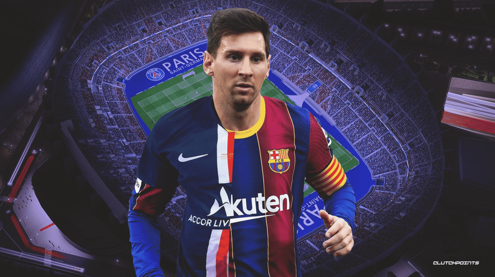
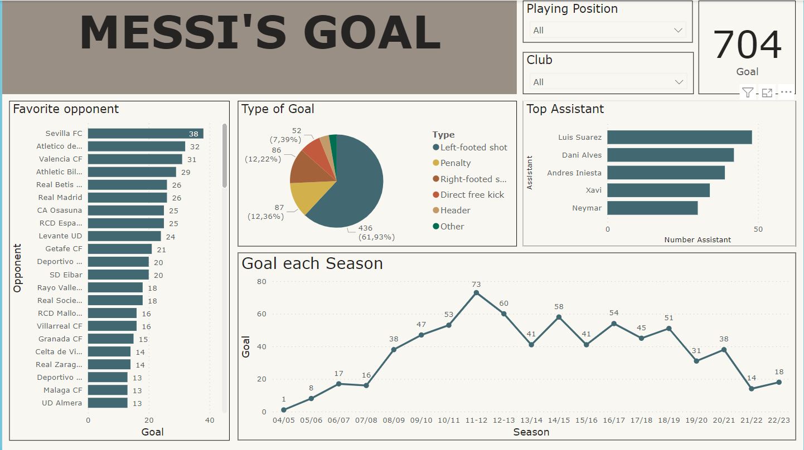

Visualization using
Power BI
Power BI dashboard of Messi's goals by season.

Summary
- This model aims to analyze the performance of Lionel Messi throughout his career.
- The data used in this model includes data from La Liga, UEFA Champions League, and Copa del Rey.
- The key features of this model include Messi's total goals, opponents, types of goals, and assists.
- The results of this model show that Messi is one of the players with the most stable scoring performance in football history.
Reports and Dashboards

Messi's Goal Stats
- A line graph displays Messi's total goals per season.
- Bar charts display Messi's goals by opponent, type of goal, and assist.
- A pie chart displays the percentage of each type of goal in Messi's total goals.
Analysis and Interpretation
- Messi has averaged over 30 goals per season throughout his career.
- Messi has scored the most goals against Sevilla and Atletico de Madrid.
- Messi scores the most goals with his left foot.
- The person who supports Messi the most is Luis Suárez.